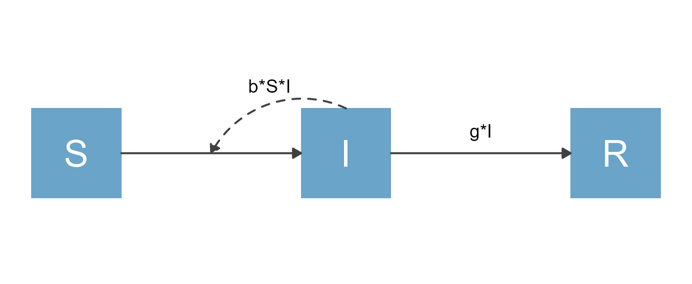
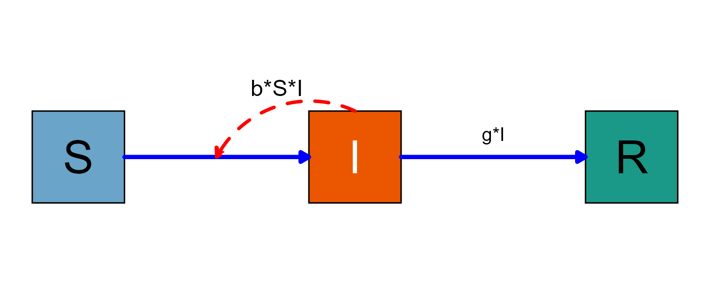
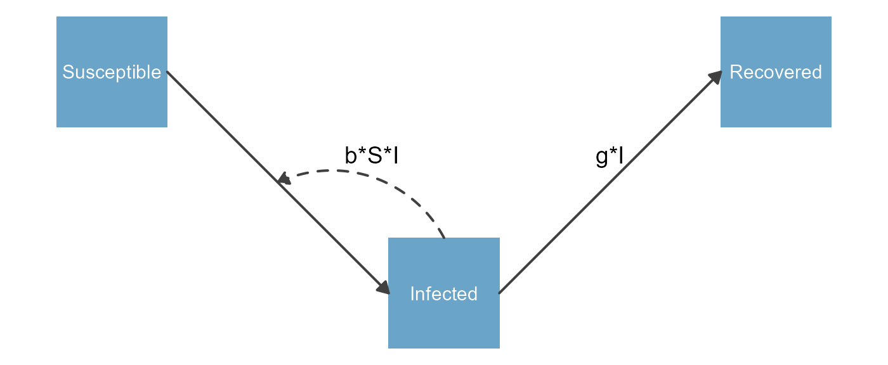
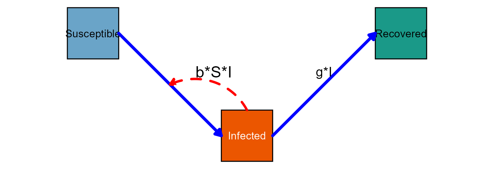

flowdiagramr
An efficient way to make good-looking diagrams
Andreas Handel
2021-06-23 07:52:33
Source:vignettes/otherinformation/useR2021_slides.Rmd
useR2021_slides.RmdMotivation
Many areas of science use models that can be represented by variables (compartments/nodes) and flows (processes).
Flow diagrams are often good ways to communicate these models.
\[ \begin{aligned} \textrm{Susceptible Individuals} \qquad \dot S & = - b S I \\ \textrm{Infected Individuals} \qquad \dot I & = b S I - g I \\ \textrm{Recovered Individuals} \qquad \dot R & = g I \end{aligned} \]
## The magick package is required to crop "sirdiagram.png" but not available.SIR model
Motivation
- Generally, one needs to create such diagrams manually using some type of graphical software.
- We wanted to provide a way to produce nice diagrams with a few lines of R code.
- We also wanted the ability to fully customize the plots if needed, and to make plots using ggplot2.
- Our (Andrew Tredennick and Andreas Handel) new package flowdiagramr allows one to do that.
flowdiagramr basics
Let flowdiagramr turn it into a nice diagram (in 2 steps):
# prepare diagram
sir_diagram_list <- prepare_diagram(sirmodel)
# make diagram
sir_diagram <- make_diagram(sir_diagram_list)
plot(sir_diagram)
Customize your diagram
Specify settings to be passed to function make_diagram(diagram_list, diagram_settings)
sir_diagram_settings <- list(
var_outline_color = "black",
var_fill_color = c("#6aa4c8", "#eb5600", "#1a9988"),
var_label_color = c("black","white","black"),
var_label_size = 12,
main_flow_color = "blue",
main_flow_size = 1.5,
interaction_flow_label_size = 6,
interaction_flow_color = "red",
interaction_flow_size = 1.2)Customize your diagram
Create diagram with customized settings
sir_diagram <- make_diagram(sir_diagram_list, sir_diagram_settings)
plot(sir_diagram)
More customizations
Specify settings to be passed to function prepare_diagram(model_list, model_settings)
More customizations
sir_diagram_list2 <- prepare_diagram(sirmodel, model_settings)
sir_diagram2 <- make_diagram(sir_diagram_list2)
plot(sir_diagram2)
More customizations
You can combine settings for prepare_diagram and make_diagram
sir_diagram_settings$var_label_size = 4 #reduce to make text fit
sir_diagram3 <- make_diagram(sir_diagram_list2,
sir_diagram_settings)
plot(sir_diagram3)
Even more customization
prepare_diagram returns a list of data frames that specify variable and flow location and styling.
print(sir_diagram_list2$variables)## id label name xmin xmax ymin ymax labelx labely plot_label color
## 1 1 S Susceptible -0.5 0.5 -0.5 0.5 0 0 Susceptible NA
## 2 2 I Infected 2.5 3.5 -2.5 -1.5 3 -2 Infected NA
## 3 3 R Recovered 5.5 6.5 -0.5 0.5 6 0 Recovered NA
## fill label_color label_size
## 1 #6aa4c8 white 4
## 2 #6aa4c8 white 4
## 3 #6aa4c8 white 4Even more customization
You can edit the object produced by prepare_diagram before calling make_diagram.
#increase the I box a bit both on left and right
sir_diagram_list2$variables$xmin[2] = 2 #was 2.5
sir_diagram_list2$variables$xmax[2] = 4 #was 3.5
#modify inflow and outflow arrows to align with new box size
sir_diagram_list2$flows$xend[1] = 2 #was 2.5
sir_diagram_list2$flows$xstart[2] = 4 #was 3.5
#move the b*S*I arrow end a bit
sir_diagram_list2$flows$xend[3] = 1.25 #was 1.5
#move the b*S*I label
sir_diagram_list2$flows$labelx[3] = 2 #was 2.35
sir_diagram_list2$flows$labely[3] = -1.2 #was -0.75Even more customization
With those modifications, the resulting diagram looks like this
sir_diagram4 <- make_diagram(sir_diagram_list2, sir_diagram_settings)
plot(sir_diagram4)
Get the full code
-
flowdiagramrcan produce anRscript containing the complete code to produce the diagram.
write_diagram(sirmodel, filename ="sirmodel_diagram_code.R")You can run the code to reproduce the figure in a stand-alone manner. You can also fully edit the code to make any tweaks you like.
You can provide
write_diagramall your modifications implemented inmodel_settings,diagram_listanddiagram_settings.
Further Resources
The flowdiagramr website provides a lot of additional information (https://andreashandel.github.io/flowdiagramr/):
- Several detailed vignettes with examples illustrating options for customization.
- Explanation for making non-model based flow diagrams.
- Comparison to other R packages (e.g.
DiagrammeR). - And much more 😄
Feedback is appreciated:
- Web: www.andreashandel.com
- Email: ahandel@uga.edu
- Twitter: @andreashandel